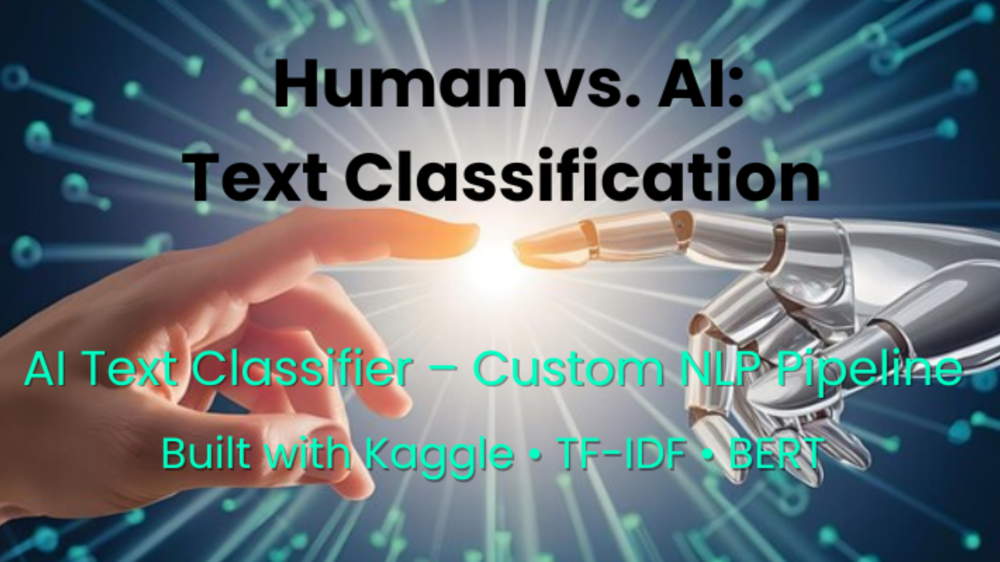

🧠 Human vs AI Text Classifier
Built a machine learning model to classify text as human-written or AI-generated using a
custom dataset I created and published on Kaggle (2,500 human-written vs 2,500 AI texts).
Tools: TF-IDF, Joblib, Logistic Regression, SVC, Naive Bayes, Random Forest
View on GitHub |
View on Kaggle
💼 Equity Portfolio Optimization (R)
Simulated portfolio rebalancing using historical stock price data for a $5 million equity fund. Evaluated daily vs. periodic rebalancing performance.
Tools: R, Portfolio Theory, Time Series
View on GitHub
🧬 Spiking Neural Networks with PyTorch
Led implementation of SNNs using PyTorch and Norse, benchmarking performance against traditional ANNs using SHD/N-MNIST datasets.
Tools: Python, Norse, Deep Learning, SNN
View on GitHub
☁️ AWS MovieLens MapReduce
Deployed Hadoop on AWS EC2 and executed a MapReduce job to analyze 1M+ ratings from MovieLens dataset using custom Java classes.
Tools: Java, AWS EC2, Hadoop, MapReduce
View on GitHub
🦠 COVID-19 Case Forecasting
Forecasted COVID-19 regional case trends using LSTM deep learning models to detect surges and support health planning.
Tools: Python, Pandas, LSTM, ML
View on GitHub